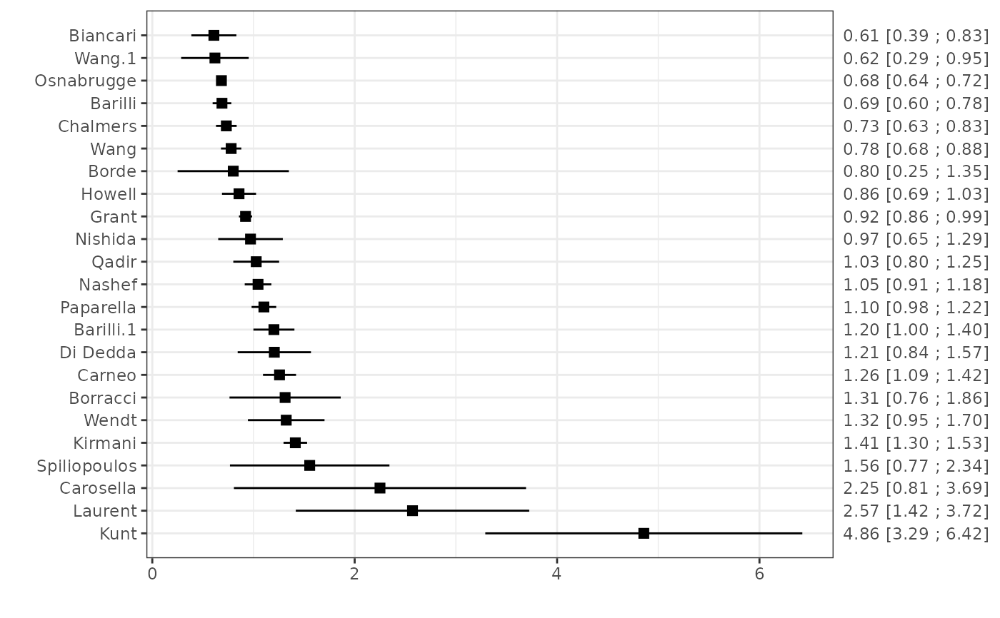

This function calculates (transformed versions of) the ratio of total number of observed versus expected events with the corresponding sampling variance.
Usage
oecalc(
OE,
OE.se,
OE.cilb,
OE.ciub,
OE.cilv,
EO,
EO.se,
citl,
citl.se,
N,
O,
E,
Po,
Po.se,
Pe,
data,
slab,
add = 1/2,
g = NULL,
level = 0.95,
...
)Arguments
- OE
vector with the estimated ratio of total observed versus total expected events
- OE.se
Optional vector with the standard errors of the estimated O:E ratios.
- OE.cilb
Optional vector to specify the lower limits of the confidence interval for
OE.- OE.ciub
Optional vector to specify the upper limits of the confidence interval for
OE.- OE.cilv
Optional vector to specify the levels of aformentioned confidence interval limits. (default: 0.95, which corresponds to the 95% confidence interval).
- EO
Optional vector with the estimated ratio of total expected versus total observed events
- EO.se
Optional vector with the standard errors of the estimated E:O ratios
- citl
Optional vector with the estimated calibration-in-the-large statistics
- citl.se
Optional vector with the standard error of the calibration-in-the-large statistics
- N
Optional vector to specify the sample/group sizes.
- O
Optional vector to specify the total number of observed events.
- E
Optional vector to specify the total number of expected events
- Po
Optional vector to specify the (cumulative) observed event probabilities.
- Po.se
Optional vector with the standard errors of
Po. For time-to-event data, these could also be the SE of the observed survival probabilities (e.g. as obtained from Kaplan-Meier analysis)- Pe
Optional vector to specify the (cumulative) expected event probabilites (if specified, during time
t.val)- data
Optional data frame containing the variables given to the arguments above.
- slab
Optional vector with labels for the studies.
- add
a non-negative number indicating the amount to add to zero counts. See `Details'
- g
a quoted string that is the function to transform estimates of the total O:E ratio; see the details below.
- level
level for confidence interval, default
0.95.- ...
Additional arguments.
Value
An object of class c("mm_perf","data.frame") with the following columns:
- "theta"
The (transformed) O:E ratio.
- "theta.se"
Standard errors of the (transformed) O:E ratio.
- "theta.cilb"
Lower confidence interval of the (transformed) O:E ratios. The level is specified in
level. Intervals are calculated on the same scale asthetaby assuming a Normal distribution.- "theta.ciub"
Upper confidence interval of the (transformed) c-statistics. The level is specified in
level. Intervals are calculated on the same scale asthetaby assuming a Normal distribution.- "theta.source"
Method used for calculating the (transformed) O:E ratio.
- "theta.se.source"
Method used for calculating the standard error of the (transformed) O:E ratio.
References
Debray TPA, Damen JAAG, Snell KIE, Ensor J, Hooft L, Reitsma JB, et al. A guide to systematic review and meta-analysis of prediction model performance. BMJ. 2017;356:i6460.
Debray TPA, Damen JAAG, Riley R, Snell KIE, Reitsma JB, Hooft L, et al. A framework for meta-analysis of prediction model studies with binary and time-to-event outcomes. Stat Methods Med Res. 2019 Sep;28(9):2768–86.
Snell KI, Ensor J, Debray TP, Moons KG, Riley RD. Meta-analysis of prediction model performance across multiple studies: Which scale helps ensure between-study normality for the C -statistic and calibration measures? Stat Methods Med Res. 2017.
Examples
######### Validation of prediction models with a binary outcome #########
data(EuroSCORE)
# Calculate the total O:E ratio and its standard error
est1 <- oecalc(O = n.events, E = e.events, N = n, data = EuroSCORE, slab = Study)
est1
#> theta theta.se theta.cilb theta.ciub theta.source O
#> Nashef 1.0450450 0.06716203 0.9134099 1.1766802 O, E and N 232
#> Biancari 0.6086957 0.11345371 0.3863305 0.8310608 O, E and N 28
#> Di Dedda 1.2058824 0.18475130 0.8437765 1.5679882 O, E and N 41
#> Chalmers 0.7318008 0.05203645 0.6298112 0.8337903 O, E and N 191
#> Grant 0.9214541 0.03320253 0.8563783 0.9865298 O, E and N 746
#> Carneo 1.2573099 0.08328543 1.0940735 1.4205464 O, E and N 215
#> Kunt 4.8571429 0.79922240 3.2906957 6.4235900 O, E and N 34
#> Kirmani 1.4134367 0.05935803 1.2970971 1.5297763 O, E and N 547
#> Howell 0.8571429 0.08588255 0.6888162 1.0254696 O, E and N 90
#> Wang 0.7793103 0.05131185 0.6787410 0.8798797 O, E and N 226
#> Borde 0.8000000 0.28056169 0.2501092 1.3498908 O, E and N 8
#> Qadir 1.0270270 0.11555260 0.8005481 1.2535060 O, E and N 76
#> Spiliopoulos 1.5555556 0.40204098 0.7675697 2.3435414 O, E and N 14
#> Wendt 1.3235294 0.19309081 0.9450784 1.7019804 O, E and N 45
#> Laurent 2.5714286 0.58846311 1.4180621 3.7247951 O, E and N 18
#> Wang.1 0.6190476 0.17032315 0.2852204 0.9528749 O, E and N 13
#> Nishida 0.9705882 0.16279815 0.6515097 1.2896668 O, E and N 33
#> Barilli 0.6885246 0.04710205 0.5962063 0.7808429 O, E and N 210
#> Barilli.1 1.2019231 0.10340170 0.9992595 1.4045867 O, E and N 125
#> Paparella 1.1029412 0.06211634 0.9811954 1.2246870 O, E and N 300
#> Carosella 2.2500000 0.73637626 0.8067290 3.6932710 O, E and N 9
#> Borracci 1.3125000 0.28036848 0.7629879 1.8620121 O, E and N 21
#> Osnabrugge 0.6830357 0.02064915 0.6425641 0.7235073 O, E and N 1071
#> E N
#> Nashef 222.00 5553
#> Biancari 46.00 1027
#> Di Dedda 34.00 1090
#> Chalmers 261.00 5576
#> Grant 809.59 23740
#> Carneo 171.00 3798
#> Kunt 7.00 428
#> Kirmani 387.00 15497
#> Howell 105.00 933
#> Wang 290.00 11170
#> Borde 10.00 498
#> Qadir 74.00 2004
#> Spiliopoulos 9.00 216
#> Wendt 34.00 1066
#> Laurent 7.00 314
#> Wang.1 21.00 818
#> Nishida 34.00 461
#> Barilli 305.00 12201
#> Barilli.1 104.00 1670
#> Paparella 272.00 6191
#> Carosella 4.00 250
#> Borracci 16.00 503
#> Osnabrugge 1568.00 50588
# Calculate the log of the total O:E ratio and its standard error
est2 <- oecalc(O = n.events, E = e.events, N = n, data = EuroSCORE, slab = Study, g = "log(OE)")
est2
#> theta theta.se theta.cilb theta.ciub theta.source O
#> Nashef 0.04405999 0.06426711 -0.081901240 0.17002122 O, E and N 232
#> Biancari -0.49643689 0.18638824 -0.861751123 -0.13112265 O, E and N 28
#> Di Dedda 0.18721154 0.15320840 -0.113071397 0.48749448 O, E and N 41
#> Chalmers -0.31224698 0.07110740 -0.451614919 -0.17287904 O, E and N 191
#> Grant -0.08180235 0.03603276 -0.152425252 -0.01117944 O, E and N 746
#> Carneo 0.22897447 0.06624097 0.099144553 0.35880439 O, E and N 215
#> Kunt 1.58045038 0.16454579 1.257946559 1.90295419 O, E and N 34
#> Kirmani 0.34602411 0.04199553 0.263714374 0.42833385 O, E and N 547
#> Howell -0.15415068 0.10019631 -0.350531831 0.04223047 O, E and N 90
#> Wang -0.24934592 0.06584264 -0.378395127 -0.12029672 O, E and N 226
#> Borde -0.22314355 0.35070211 -0.910507050 0.46421995 O, E and N 8
#> Qadir 0.02666825 0.11251174 -0.193850721 0.24718721 O, E and N 76
#> Spiliopoulos 0.44183275 0.25845491 -0.064729568 0.94839507 O, E and N 14
#> Wendt 0.28030197 0.14589084 -0.005638818 0.56624275 O, E and N 45
#> Laurent 0.94446161 0.22884677 0.495930190 1.39299303 O, E and N 18
#> Wang.1 -0.47957308 0.27513739 -1.018832454 0.05968629 O, E and N 13
#> Nishida -0.02985296 0.16773143 -0.358600527 0.29889460 O, E and N 33
#> Barilli -0.37320425 0.06841012 -0.507285614 -0.23912288 O, E and N 210
#> Barilli.1 0.18392284 0.08603021 0.015306718 0.35253896 O, E and N 125
#> Paparella 0.09798041 0.05631881 -0.012402434 0.20836325 O, E and N 300
#> Carosella 0.81093022 0.32727834 0.169476459 1.45238397 O, E and N 9
#> Borracci 0.27193372 0.21361408 -0.146742192 0.69060962 O, E and N 21
#> Osnabrugge -0.38120813 0.03023143 -0.440460642 -0.32195562 O, E and N 1071
#> E N
#> Nashef 222.00 5553
#> Biancari 46.00 1027
#> Di Dedda 34.00 1090
#> Chalmers 261.00 5576
#> Grant 809.59 23740
#> Carneo 171.00 3798
#> Kunt 7.00 428
#> Kirmani 387.00 15497
#> Howell 105.00 933
#> Wang 290.00 11170
#> Borde 10.00 498
#> Qadir 74.00 2004
#> Spiliopoulos 9.00 216
#> Wendt 34.00 1066
#> Laurent 7.00 314
#> Wang.1 21.00 818
#> Nishida 34.00 461
#> Barilli 305.00 12201
#> Barilli.1 104.00 1670
#> Paparella 272.00 6191
#> Carosella 4.00 250
#> Borracci 16.00 503
#> Osnabrugge 1568.00 50588
# Display the results of all studies in a forest plot
plot(est1)
